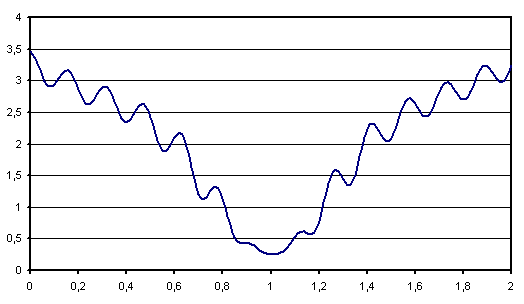

Apprentissage d’un réseau de neurones#
Le terme apprentissage est encore inspiré de la biologie et se traduit par la minimisation de la fonction (2) où \(f\) est un réseau de neurone défini par un perceptron. Il existe plusieurs méthodes pour effectuer celle-ci. Chacune d’elles vise à minimiser la fonction d’erreur :
Dans tous les cas, les différents apprentissages utilisent la suite suivante \(\pa{ \epsilon_{t}}\) vérifiant (1) et proposent une convergence vers un minimum local.
Il est souhaitable d’apprendre plusieurs fois la même fonction en modifiant les conditions initiales de ces méthodes de manière à améliorer la robustesse de la solution.
Apprentissage avec gradient global#
L’algorithme de rétropropagation permet d’obtenir la dérivée de l’erreur \(e\) pour un vecteur d’entrée \(X\). Or l’erreur \(E\pa{W}\) à minimiser est la somme des erreurs pour chaque exemple \(X_i\), le gradient global \(\partialfrac{E\pa{W}}{W}\) de cette erreur globale est la somme des gradients pour chaque exemple (voir équation (3)). Parmi les méthodes d’optimisation basées sur le gradient global, on distingue deux catégories :
Les méthodes du premier ordre, elles sont calquées sur la méthode de Newton et n’utilisent que le gradient.
Les méthodes du second ordre ou méthodes utilisant un gradient conjugué elles sont plus coûteuses en calcul mais plus performantes puisque elles utilisent la dérivée seconde ou une valeur approchée.
Méthodes du premier ordre#
Les méthodes du premier ordre sont rarement utilisées. Elles sont toutes basées sur le principe de la descente de gradient de Newton présentée dans la section Algorithme et convergence :
Algorithme A1 : optimisation du premier ordre
Initialiation
Le premier jeu de coefficients \(W_0\) du réseau de neurones est choisi aléatoirement.
Calcul du gradient
\(g_t \longleftarrow \partialfrac{E_t}{W} \pa {W_t} = \sum_{i=1}^{N} e'\pa {Y_{i} - f \pa{W_t,X_{i}}}\)
Mise à jour
Terminaison
Si \(\frac{E_t}{E_{t-1}} \approx 1\) (ou \(\norm{g_t} \approx 0\)) alors l’apprentissage a convergé sinon retour au calcul du gradient.
La condition d’arrêt peut-être plus ou moins stricte selon les besoins du problème. Cet algorithme converge vers un minimum local de la fonction d’erreur (d’après le théorème de convergence mais la vitesse de convergence est inconnue.
Méthodes du second ordre#
L’algorithme apprentissage global fournit le canevas des méthodes d’optimisation du second ordre. La mise à jour des coefficients est différente car elle prend en compte les dernières valeurs des coefficients ainsi que les derniers gradients calculés. Ce passé va être utilisé pour estimer une direction de recherche pour le minimum différente de celle du gradient, cette direction est appelée gradient conjugué (voir [Moré1977]).
Ces techniques sont basées sur une approximation du second degré de la fonction à minimiser. On note \(M\) le nombre de coefficients du réseau de neurones (biais compris). Soit \(h: \mathbb{R}^{M} \dans \mathbb{R}\) la fonction d’erreur associée au réseau de neurones : \(h \pa {W} = \sum_{i} e \pa{Y_i,f \pa{ W,X_i} }\). Au voisinage de \(W_{0}\), un développement limité donne :
Par conséquent, sur un voisinage de \(W_{0}\), la fonction \(h\left( W\right)\) admet un minimum local si \(\frac{\partial^{2}h\left( W_{0}\right) }{\partial W^{2}}\) est définie positive strictement.
Rappel : \(\dfrac{\partial^{2}h\left( W_{0}\right) }{\partial W^{2}}\) est définie positive strictement \(\Longleftrightarrow\forall Z\in\mathbb{R}^{N},\; Z\neq0\Longrightarrow Z^{\prime}\dfrac{\partial ^{2}h\left( W_{0}\right) }{\partial W^{2}}Z>0\).
Une matrice symétrique définie strictement positive est inversible, et le minimum est atteint pour la valeur :
Néanmoins, pour un réseau de neurones, le calcul de la dérivée seconde est coûteux, son inversion également. C’est pourquoi les dernières valeurs des coefficients et du gradient sont utilisées afin d’approcher cette dérivée seconde ou directement son inverse. Deux méthodes d’approximation sont présentées :
L’algorithme BFGS (Broyden-Fletcher-Goldfarb-Shano) ([Broyden1967], [Fletcher1993]), voir aussi les versions L-BFGS.
L’algoritmhe DFP (Davidon-Fletcher-Powell) ([Davidon1959], [Fletcher1963]).
La figure du gradient conjugué est couramment employée pour illustrer l’intérêt des méthodes de gradient conjugué. Le problème consiste à trouver le minimum d’une fonction quadratique, par exemple, \(G\pa{x,y} = 3x^2 + y^2\). Tandis que le gradient est orthogonal aux lignes de niveaux de la fonction \(G\), le gradient conjugué se dirige plus sûrement vers le minimum global.
Figure F1 : Gradient conjugué

Gradient et gradient conjugué sur une ligne de niveau de la fonction \(G\pa{x,y} = 3x^2 + y^2\), le gradient est orthogonal aux lignes de niveaux de la fonction \(G\), mais cette direction est rarement la bonne à moins que le point \(\pa{x,y}\) se situe sur un des axes des ellipses, le gradient conjugué agrège les derniers déplacements et propose une direction de recherche plus plausible pour le minimum de la fonction. Voir Conjugate Gradient Method.
Ces méthodes proposent une estimation de la dérivée seconde (ou de son inverse) utilisée en (2). Dans les méthodes du premier ordre, une itération permet de calculer les poids \(W_{t+1}\) à partir des poids \(W_t\) et du gradient \(G_t\). Si ce gradient est petit, on peut supposer que \(G_{t+1}\) est presque égal au produit de la dérivée seconde par \(G_t\). Cette relation est mise à profit pour construire une estimation de la dérivée seconde. Cette matrice notée \(B_t\) dans l’algorithme BFGS est d’abord supposée égale à l’identité puis actualisée à chaque itération en tenant de l’information apportée par chaque déplacement.
Algorithme A2 : BFGS
Le nombre de paramètres de la fonction \(f\) est \(M\).
Initialisation
Le premier jeu de coefficients \(W_0\) du réseau de neurones est choisi aléatoirement.
Calcul du gradient
Mise à jour des coefficients
Mise à jour de la marice :math:`B_t`
Terminaison
Si \(\frac{E_t}{E_{t-1}} \approx 1\) alors l’apprentissage a convergé sinon retour au calcul du gradient.
Lorsque la matrice \(B_t\) est égale à l’identité, le gradient conjugué est égal au gradient. Au fur et à mesure des itérations, cette matrice toujours symétrique évolue en améliorant la convergence de l’optimisation. Néanmoins, la matrice \(B_t\) doit être « nettoyée » (égale à l’identité) fréquemment afin d’éviter qu’elle n’agrège un passé trop lointain. Elle est aussi nettoyée lorsque le gradient conjugué semble trop s’éloigner du véritable gradient et devient plus proche d’une direction perpendiculaire.
La convergence de cet algorithme dans le cas des réseaux de neurones est plus rapide qu’un algorithme du premier ordre, une preuve en est donnée dans [Driancourt1996].
En pratique, la recherche de \(\epsilon^*\) est réduite car le calcul de l’erreur est souvent coûteux, il peut être effectué sur un grand nombre d’exemples. C’est pourquoi on remplace l’étape de mise à jour de l’algorithme BFGS par celle-ci :
Algorithme A3 : BFGS”
Le nombre de paramètre de la fonction \(f\) est \(M\).
Initialisation, calcul du gradient
Voir BFGS.
Recherche de :math:`epsilon^*`
Mise à jour des coefficients
Mise à jour de la matrice :math:`B_t`, temrinaison
Voir BFGS.
L’algorithme DFP est aussi un algorithme de gradient conjugué qui propose une approximation différente de l’inverse de la dérivée seconde.
Algorithme A4 : DFP
Le nombre de paramètre de la fonction \(f\) est \(M\).
Initialisation
Le premier jeu de coefficients \(W_0\) du réseau de neurones est choisi aléatoirement.
Calcul du gradient
Mise à jour des coefficients
Mise à jour de la matrice :math:`B_t`
Terminaison
Si \(\frac{E_t}{E_{t-1}} \approx 1\) alors l’apprentissage a convergé sinon retour à du calcul du gradient.
Seule l’étape de mise à jour \(B_t\) diffère dans les algorithmes BFGS et DFP. Comme l’algorithme BFGS, on peut construire une version DFP” inspirée de l’algorithme BFGS”.
Apprentissage avec gradient stochastique#
Compte tenu des courbes d’erreurs très accidentées dessinées par les réseaux de neurones, il existe une multitude de minima locaux. De ce fait, l’apprentissage global converge rarement vers le minimum global de la fonction d’erreur lorsqu’on applique les algorithmes basés sur le gradient global. L’apprentissage avec gradient stochastique est une solution permettant de mieux explorer ces courbes d’erreurs. De plus, les méthodes de gradient conjugué nécessite le stockage d’une matrice trop grande parfois pour des fonctions ayant quelques milliers de paramètres. C’est pourquoi l’apprentissage avec gradient stochastique est souvent préféré à l’apprentissage global pour de grands réseaux de neurones alors que les méthodes du second ordre trop coûteuses en calcul sont cantonnées à de petits réseaux. En contrepartie, la convergence est plus lente. La démonstration de cette convergence nécessite l’utilisation de quasi-martingales et est une convergence presque sûre [Bottou1991].
Figure F2 : Exemple de minimal locaux
Algprithme A1 : apprentissage stochastique
Initialisation
Le premier jeu de coefficients \(W_0\) du réseau de neurones est choisi aléatoirement.
Récurrence
Terminaison
Si \(\frac{E_t}{E_{t-1}} \approx 1\) alors l’apprentissage a convergé sinon retour au calcul du gradient.
En pratique, il est utile de converser le meilleur jeu de coefficients : \(W^* = \underset{u \supegal 0}{\arg \min} \; E_{u}\) car la suite \(\pa {E_u}_{u \supegal 0}\) n’est pas une suite décroissante.